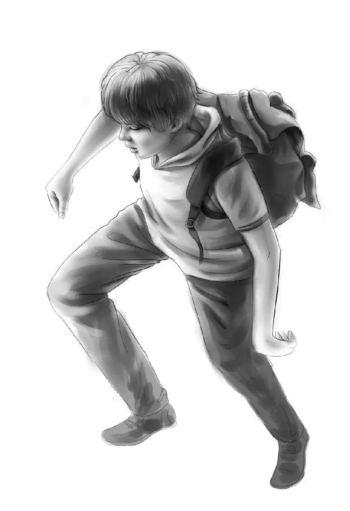
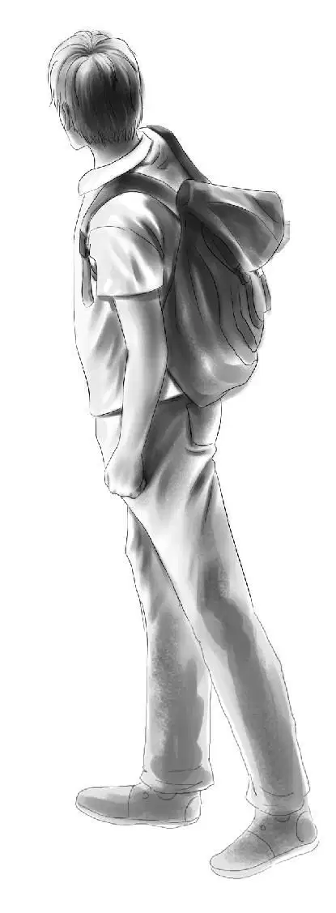
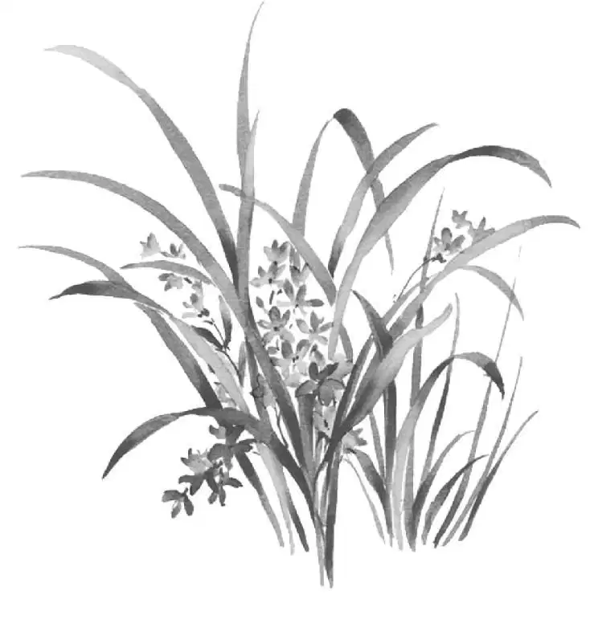
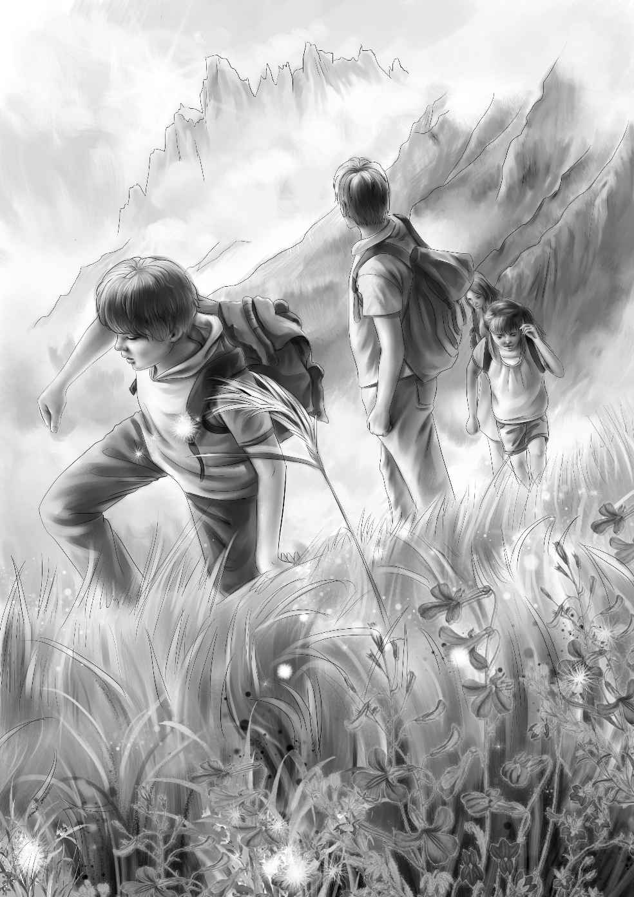
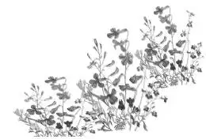

Trip—or Adventure？

这是一个晴好的秋日，阳光明媚，天空湛蓝。奥登一家人围坐在早餐桌旁，和往常一样聊着天，他们谈起了绿野镇学校停课一周的事情：一场大火过后，有些校舍需要修葺和重新上漆。
“知道我想做什么吗？”班尼·奥登突然问道。
“不知道，你想做什么？”班尼的哥哥亨利笑着问。他知道，班尼想要做的事情通常都是很有趣的。
奥登爷爷也笑了起来：“说给我们听听嘛，班尼。你想做的事情，我向来都是很感兴趣的。”
班尼放下了勺子，他刚刚吃完一大盘牛奶泡的脆片。
“好吧。”班尼说道，“我想去橡丘森林，在猎人的小木屋里住几天，而且亨利的大学一个星期后才开学，大家可以一起去……”
“这事儿并不难。”奥登爷爷说道，“那座小木屋归运动者俱乐部所有，而我是俱乐部的会员。而且现在这个时节，猎人们也不会占用那间屋子。”说着，他放下了咖啡杯，“再说，小木屋离这儿不远，现在时节还早，不至于下雪。”
“跟我想的差不离！”班尼说，“离下雪还远着呢，咱们可以在秋天的森林里尽情撒欢，没准还能看到野鹿之类的野生动物，发现新的植物……”
“可吃饭的问题怎么解决？”亨利问道，“你准是第一个喊饿的人，班尼。”
“吃饭也是旅行的乐趣之一嘛！”班尼说，“关于这个问题，我已经问过罗宾斯先生啦，他是爷爷的朋友，也是运动者俱乐部的成员。”
“他是怎么跟你说的呢？”爷爷问道。

“他说，橡丘森林的另一侧有家叫尼尔森的小商店，咱们每天徒步去那儿的话，来回也就5英里的路程——有一条很好走、不容易迷路的捷径通向那儿，我们需要的东西在小店里都能买到。”
“来去各2.5英里的路程……看来你早就计算好了啊！”亨利又问，“爷爷，小屋里能做饭么？”
“当然能，屋里有个烧煤油的炉子，把炉子烧热，煮煮青豆完全没问题。”
“能烧水么？”维莉接着问道。
“要是用平底锅的话，烧个一锅也是可以的。”爷爷笑着答道，“要是供几个人洗澡的话，那可就不够啦。”
“正合我意！”班尼说道。
“可不怎么合我的意呢！”奥登先生说，“我还是宁愿待在家里。”
“爷爷，我们好想跟您一起去啊！”维莉说，“您真的不想去么？”
“是啊，乖孩子，我真的想待在家里。亨利开车过去的时候，我可以陪你们一起，之后我再将车子开回来。咱们一个星期后见吧——具体时间再商量。”
“班尼，”亨利说道，“要是咱们的食物吃光了，又不想来回走上5英里去小商店的话，那该怎么办？”
“要是这样，咱们随时都可以走回家来啊！”班尼打趣道，“我要把我的晶体管收音机带上，这样就可以听各种新闻啦！”
“我也好想去。”杰西说，“咱们还从没在大冷天里出去探险过呢！”
“为什么说是探险呢，杰西？”班尼问道，“这不过就是一次旅行而已嘛！”
“说得也是。”杰西说，“不过，你也知道，咱们的旅行经常都会变成探险的，大家不妨有个心理准备，这次或许会遇到意想不到的事情呢？把望望也带上吧，它会很开心的，这种旅行最适合它了。”
望望是奥登一家收养的狗狗，不论杰西说什么，它似乎都能听懂。这不，它知道奥登家的孩子们在谈论它，于是摇了摇短短的尾巴，因为杰西刚才说了“把望望也带上吧”。
“它知道这次会带上它。”亨利说着，看了一眼狗狗。
“是啊，它在笑呢！”班尼说，“快看啊！”
望望仿佛在说：“我准备好了，咱们出发吧！”

一个晴朗的日子里，奥登一家人向着橡丘森林出发了。天空一片湛蓝，阳光在红黄相间的枫树叶上闪耀。

奥登家的孩子们各自带了一个睡袋，穿了厚厚的衣服，又带了些备用的衣物，以便晚间御寒。
车子一路飞驰，最后，亨利在一条小路前停了下来，这条小路一直通往山上，茂密的树林覆盖着山坡。
杰西、维莉、亨利和班尼下了车，望望也跟了下来。孩子们各自拿起睡袋、背包还有食物。
望望欢叫着蹦跶起来，它知道，一次不同寻常的旅行就要开始了。
“瞧你，以为自己又变回小狗狗了吧，望望。”杰西笑着说，“你的年纪都快成狗大叔了呢，难道不知道么？”
望望的确不知道，它觉得自己就像小狗宝宝一样——能跟家人在林中漫步，它感到快活极了。
孩子们跟奥登先生说了再见，望望也把前爪搭在车门上叫了两声，算作道别。奥登先生拍了拍它的脑袋说：“我会想你的，望望。别忘了，从今天算起，一周之后的上午十点，咱们在这儿碰面。”
孩子们挥着手，直到车子消失在视线里，才开始准备爬山。上山有条小路，路面很窄，孩子们排成一行，班尼走在最前面。
树林里弥漫着常青树和松针的味道，一路上不断有红黄色的叶子飘落下来。
“我都等不及了！”班尼说，“真想马上飞到小木屋！”
“你还是好好走路吧，班尼。”亨利笑着说。
